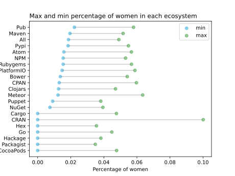
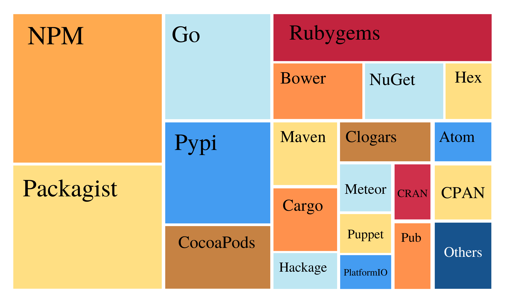

Through out the years...

In the beginning (2008), female contributors took up less than 3% of all active contributor population and number of commits. By the end of our data, female participation has increased for all three aspects. Female ratio grew to 7.96% among all and 6.0% among core contributors; the ratio of female-authored commits reached 10.98%; and as many as 19.3% projects had at least one female contributor.

Largest 20 ecos by the number of projs:
